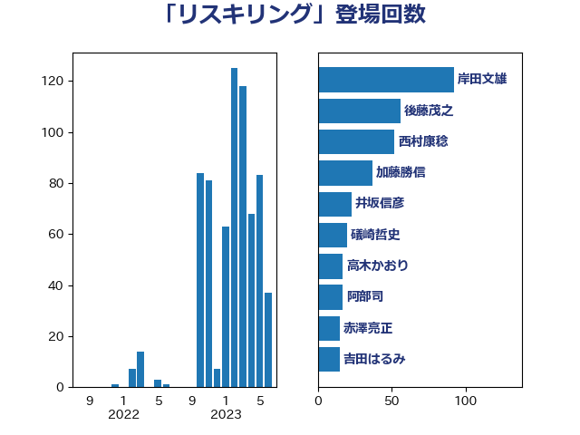

単語「リスキリング」

| 岸田文雄 | 自由民主党 | 92 回 |
| 後藤茂之 | 自由民主党 | 56 回 |
| 西村康稔 | 自由民主党 | 52 回 |
| 加藤勝信 | 自由民主党 | 37 回 |
| 井坂信彦 | 立憲民主党 | 23 回 |
| 礒崎哲史 | 国民民主党 | 20 回 |
| 高木かおり | 日本維新の会 | 17 回 |
| 阿部司 | 日本維新の会 | 17 回 |
| 赤澤亮正 | 自由民主党 | 15 回 |
| 吉田はるみ | 立憲民主党 | 15 回 |
| 藤田文武 | 日本維新の会 | 13 回 |
| 西岡秀子 | 国民民主党 | 11 回 |
| 村田享子 | 立憲民主党 | 11 回 |
| 福重隆浩 | 公明党 | 10 回 |
| 西村智奈美 | 立憲民主党 | 8 回 |
| 櫻井周 | 立憲民主党 | 8 回 |
| 平山佐知子 | 無所属 | 8 回 |
| 伊藤孝恵 | 国民民主党 | 8 回 |
| 石井啓一 | 公明党 | 7 回 |
| 浅野哲 | 国民民主党 | 6 回 |
| 泉健太 | 立憲民主党 | 6 回 |
| 森本真治 | 立憲民主党 | 6 回 |
| 山際大志郎 | 自由民主党 | 6 回 |
| 小倉將信 | 自由民主党 | 6 回 |
| 鈴木義弘 | 国民民主党 | 5 回 |
| 遠藤良太 | 日本維新の会 | 5 回 |
| 石橋通宏 | 立憲民主党 | 5 回 |
| 松本剛明 | 自由民主党 | 5 回 |
| 小沼巧 | 立憲民主党 | 5 回 |
| 大家敏志 | 自由民主党 | 5 回 |
| 鈴木敦 | 国民民主党 | 4 回 |
| 羽生田俊 | 自由民主党 | 4 回 |
| 稲津久 | 公明党 | 4 回 |
| 田村まみ | 国民民主党 | 4 回 |
| 猪瀬直樹 | 日本維新の会 | 4 回 |
| 河野太郎 | 自由民主党 | 4 回 |
| 高橋光男 | 公明党 | 3 回 |
| 鈴木貴子 | 自由民主党 | 3 回 |
| 畦元将吾 | 自由民主党 | 3 回 |
| 山井和則 | 立憲民主党 | 3 回 |
| 土田慎 | 自由民主党 | 3 回 |
| 吉田久美子 | 公明党 | 3 回 |
| 前原誠司 | 国民民主党 | 3 回 |
| 伊藤渉 | 公明党 | 3 回 |
| 一谷勇一郎 | 日本維新の会 | 3 回 |
| こやり隆史 | 自由民主党 | 3 回 |
| 鰐淵洋子 | 公明党 | 2 回 |
| 音喜多駿 | 日本維新の会 | 2 回 |
| 長峯誠 | 自由民主党 | 2 回 |
| 長妻昭 | 立憲民主党 | 2 回 |
| 金村龍那 | 日本維新の会 | 2 回 |
| 道下大樹 | 立憲民主党 | 2 回 |
| 萩生田光一 | 自由民主党 | 2 回 |
| 田畑裕明 | 自由民主党 | 2 回 |
| 牧島かれん | 自由民主党 | 2 回 |
| 永岡桂子 | 自由民主党 | 2 回 |
| 尾身朝子 | 自由民主党 | 2 回 |
| 小林鷹之 | 自由民主党 | 2 回 |
| 小宮山泰子 | 立憲民主党 | 2 回 |
| 吉田とも代 | 日本維新の会 | 2 回 |
| 仁木博文 | 無所属 | 2 回 |
| 高橋はるみ | 自由民主党 | 1 回 |
| 青柳仁士 | 日本維新の会 | 1 回 |
| 鈴木英敬 | 自由民主党 | 1 回 |
| 野田国義 | 立憲民主党 | 1 回 |
| 越智隆雄 | 自由民主党 | 1 回 |
| 窪田哲也 | 公明党 | 1 回 |
| 石井苗子 | 日本維新の会 | 1 回 |
| 矢倉克夫 | 公明党 | 1 回 |
| 牧原秀樹 | 自由民主党 | 1 回 |
| 渡辺創 | 立憲民主党 | 1 回 |
| 浜田靖一 | 自由民主党 | 1 回 |
| 浜口誠 | 国民民主党 | 1 回 |
| 浅尾慶一郎 | 自由民主党 | 1 回 |
| 河西宏一 | 公明党 | 1 回 |
| 櫛渕万里 | れいわ新選組 | 1 回 |
| 柘植芳文 | 自由民主党 | 1 回 |
| 日下正喜 | 公明党 | 1 回 |
| 平林晃 | 公明党 | 1 回 |
| 平木大作 | 公明党 | 1 回 |
| 岬麻紀 | 日本維新の会 | 1 回 |
| 山添拓 | 日本共産党 | 1 回 |
| 宗清皇一 | 自由民主党 | 1 回 |
| 大塚耕平 | 国民民主党 | 1 回 |
| 堤かなめ | 立憲民主党 | 1 回 |
| 堀場幸子 | 日本維新の会 | 1 回 |
| 堀井学 | 自由民主党 | 1 回 |
| 古川直季 | 自由民主党 | 1 回 |
| 佐藤英道 | 公明党 | 1 回 |
| 住吉寛紀 | 日本維新の会 | 1 回 |
| 伊藤達也 | 自由民主党 | 1 回 |
| 伊藤孝江 | 公明党 | 1 回 |
| 井上信治 | 自由民主党 | 1 回 |
| 中野洋昌 | 公明党 | 1 回 |
| 中谷真一 | 自由民主党 | 1 回 |
| 上川陽子 | 自由民主党 | 1 回 |